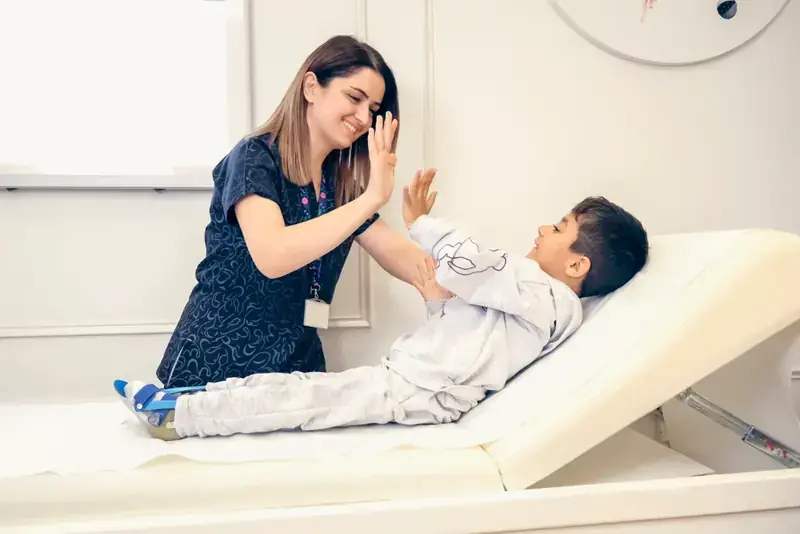

Jantung & Pembuluh Darah
Pemeriksaan EKG, echocardiography, treadmill test, hingga tindakan kateterisasi jantung dengan tim kardiolog berpengalaman.
Dari pemeriksaan rutin hingga penanganan gawat darurat, tim dokter spesialis dan perawat kami siap mendampingi Anda dan keluarga dengan ramah, cepat, dan profesional di jantung Blitar Raya.
Kami menghadirkan pengobatan presisi berbasis bukti ilmiah (evidence-based medicine) dengan fasilitas diagnostik modern, tenaga medis berpengalaman, dan layanan yang menjunjung keselamatan pasien.


Setiap rencana terapi disusun berdasarkan riwayat kesehatan, gaya hidup, dan target pemulihan Anda, dengan penjelasan yang jelas agar Anda ikut mengambil keputusan.
Radiologi dan laboratorium modern dengan hasil cepat dan akurat.
Dokter spesialis dan subspesialis di berbagai bidang klinis.
Program fisioterapi dan rehabilitasi medik untuk pemulihan yang berkelanjutan.
IGD dan perawatan intensif siap melayani setiap saat.
Tim IGD kami terdiri dari dokter jaga, perawat bersertifikat BTCLS/ACLS, serta ambulans siaga untuk menjemput pasien di wilayah Blitar dan sekitarnya. Setiap menit sangat berharga bagi keselamatan Anda.

Pemeriksaan EKG, echocardiography, treadmill test, hingga tindakan kateterisasi jantung dengan tim kardiolog berpengalaman.
Penanganan stroke, epilepsi, nyeri saraf, vertigo, dan gangguan otak serta tulang belakang dengan dukungan CT scan dan MRI.
Bedah minimal invasif (laparoskopi), bedah digestif, hernia, hingga bedah emergensi dengan kamar operasi modern.
Imunisasi, tumbuh kembang, dan perawatan anak sejak bayi baru lahir hingga remaja dalam suasana ramah anak.
Pemeriksaan refraksi, operasi katarak, glaukoma, dan penanganan retina dengan peralatan mata terkini.
Perawatan jerawat, alergi kulit, infeksi, hingga perawatan estetika medis yang aman dan terukur.
 Spesialis
Spesialis
Deteksi dini hingga rehabilitasi jantung: EKG, echo, treadmill, Holter monitor, dan kateterisasi dengan pendampingan kardiolog.
 Spesialis
Spesialis
Evaluasi dan terapi stroke, epilepsi, nyeri kepala, dan vertigo, didukung EEG, EMG, serta pencitraan otak modern.
Penanganan patah tulang, cedera olahraga, nyeri sendi, dan penggantian sendi dengan rehabilitasi pascaoperasi.

SpesialisImunisasi lengkap, pemantauan tumbuh kembang, konsultasi laktasi, dan perawatan anak sakit dengan pendekatan ramah anak.
Skrining kanker, kemoterapi, dan pendampingan pasien serta keluarga oleh tim multidisiplin.
 Penunjang
Penunjang
Pemeriksaan darah lengkap, kimia klinik, hingga kultur kuman dengan hasil cepat dan dapat diakses secara digital.
Temukan dokter spesialis yang tepat dan jadwalkan konsultasi hanya dalam hitungan menit
Dokter Spesialis Onkologi

Dokter Spesialis Jantung
Dokter Spesialis Ortopedi
Dokter Spesialis Anak
Dokter Spesialis Kulit

Dokter Spesialis Bedah Umum
Rasakan perawatan berbasis bukti dengan alur pelayanan pasien yang mudah. Para spesialis kami memadukan keahlian klinis dan pelayanan yang tulus untuk mendukung kesehatan Anda di setiap tahap.

Pencitraan diagnostik, pemantauan irama jantung, dan program rehabilitasi oleh kardiolog berpengalaman.
Evaluasi dan terapi menyeluruh untuk gangguan otak, tulang belakang, dan sistem saraf tepi.
Medical check-up, konseling gaya hidup, dan penilaian risiko agar Anda selangkah lebih maju dari penyakit yang bisa dicegah.